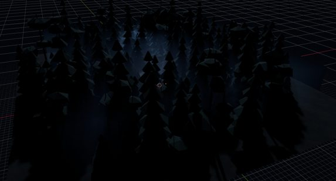
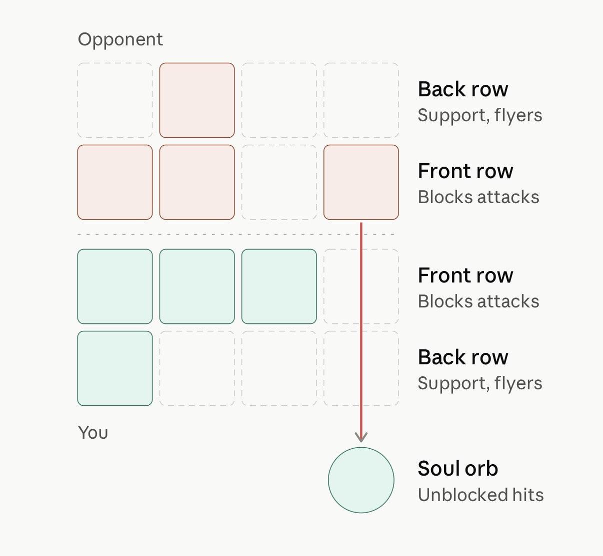
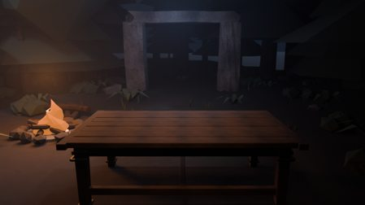
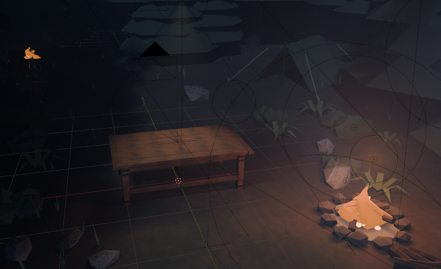

−
410 record closed
The old “It never did exist” page is gone. The project file is now the front door, not a hidden trigger.
A DARK RETRO-HORROR TACTICAL CARD GAME
Catrames is a turn-based tactical card game played across a physical 3D table. Sacrifice units, spend souls, and run the other player out of time — before your orb shatters.
The 410 placeholder is retired. This is the diff between the last public record (05 Nov 2026) and the current build (11 Nov 2026).
The old “It never did exist” page is gone. The project file is now the front door, not a hidden trigger.
Board, turn formula, sacrifice economy, combat keywords and the Withering Rose are documented in one public reference.
The timer is recalculated every turn: 3:00 base, −10% of base per completed round, −5% per damage taken, floor 10s.
Four-player free-for-all is no longer presented as final. The guide now treats 1v1 as the reference mode.
Every public state of the site can now be inspected by date, with the current state shown beside it.
CRT scanlines, parallax, staggered reveals and a reactive Soul Orb preview now carry the archival tone.
It never
did exist.
Catrames is built around a physical, tactile table: cards you place, units you sacrifice, and a clock that keeps taking itself away.
Draw exactly one card from the Main Deck or the unlimited Filler Deck. Spend souls by sacrificing units. Place your cards on a 4×4 battlefield, then use attacks, items and abilities before ringing the Desk Bell.
Click to test a visual state. The orb has no HP; it tracks remaining time and accumulated damage.
The clock is recalculated at the start of every turn: 3:00 base, minus 10% of base per completed round, minus 5% of base per damage taken. No turn is shorter than 10 seconds. At 10 seconds or less, any damage taken ends the match.

WORLD PASS / FORESTA wooden table, a campfire, a dark forest and CRT interference. The world is built from low-detail PS1-era shapes so it feels tactile, readable and slightly unreliable.
Select a date to see what the site was, and what it is now. Dates are verified from the public git history and the live deployment.
The public rules reference for 1v1, revised from the current design document. Values described as proposals are playtest starting points and may change between builds.
A turn always begins with a mandatory draw, then any number of plays or actions, and ends when you ring the Desk Bell. Every move is checked, paid for and remembered.
Draw exactly one card from the Main Deck or the unlimited Filler Deck. The draw is mandatory.
Play any number of cards you can afford, attack, use items or activate abilities.
Each sacrificed unit grants 1 Soul. Invalid moves are rejected without changing the state.
The Desk Bell ends your turn. The orb keeps its cracks and colour until your next turn.
Turn time is recalculated at the start of every turn: 180s base, minus 10% of base per completed round, minus 5% of base per damage taken, with a 10-second floor. Damage taken during the opponent's turn applies to your next turn. At 10 seconds or less, any damage shatters the orb. If the clock reaches 0:00, the active player loses the match.
Each player controls two rows of four slots. The front row blocks attacks; the back row supports, flies and enables abilities. An attack moves through the front row first, and an unblocked hit reaches the player, adding to their damage total. The orb displays that pressure; it is not a health bar.

Blocks attacks. A unit here must be dealt with before an attack can pass through its lane.
Support, flyers and abilities. Back-row units are safer, but they do not block by default.
Unblocked hits raise the player's damage total and shorten their future turns. Cracks and colour show the pressure; the orb has no HP.
When a front-row unit dies or is sacrificed, the unit directly behind it advances into the empty slot. Flying units are exempt and stay in the back row unless their controller moves them.
Draw one card, play or act, ring the bell. The orb shows your remaining time; the timer itself is recalculated at the start of each turn from completed rounds and damage taken.
180 × (1 − 0.30 − 0.60) = 18s
Every 2–3 turns, choose 1 of 3 consumable items. You can hold up to 3 and use any number of them on your turn.
The economy is built on sacrifice. Souls are not a separate resource you collect from a track; they are paid by giving up units already on the table.
cards / proposal
card each turn
Withering Rose source
two rows of four per player
Your constructed cards: 20–30 cards as a working proposal. Copy limits are still being tested (currently 2 Common/Uncommon, 1 Rare/Premium). When the Main Deck runs out, the Filler Deck remains available.
Unlimited. It provides the Withering Rose and keeps the table playable when the Main Deck is empty or a cheap body is needed. Filler cards cannot go in the Main Deck.
Each sacrificed unit grants exactly 1 Soul. A card's soul cost is derived from its net point value, including backlash, and caps at 4. Invalid payments are rejected before the state changes.
A filler-deck unit and the cheapest body on the table. It does no damage, but a basic attack is reduced by 1 and the attacker takes 1 back.
SPIKES 1 — absorbs 1 damage from a basic attack and deals 1 back.
A 0-soul, 0-ATK, 1-HP filler unit. It will not win a fight, but a basic attack is reduced by 1 and the attacker takes 1 back.
Timing note: Spikes resolve before the defender loses HP. Blessed attackers still take the retaliation, and deaths are checked after the attack finishes.
Keywords are printed in plain language on the card face. Damage resolves in the same order on every client, so a defense always answers an attack the same way.
Absorbs up to N damage from a basic attack and returns the same amount to the attacker. Ability damage ignores Spikes by default.
Armor reduces each incoming hit by N. Shield absorbs up to N per hit. Barrier is a one-time pool that disappears when spent.
Flying bypasses the front row and can strike the back row or the player. Ranged and flying units can hit flyers; melee cannot.
Ignores armor, shield and barrier. It does not stop Spikes retaliation, so cheap filler bodies remain a real answer.
Blessed check → barrier → shield → armor → Spikes (basic attacks only) → HP loss → death and trigger checks.
There is no orb HP to grind down. Damage raises the opponent's damage total and shortens their future turns. A player loses at 0:00, or as soon as they take damage with 10 seconds or less remaining.
Every point of damage shortens the opponent's next turn. If their timer reaches 0:00, the Soul Orb shatters and they lose.
At 10 seconds or less, any damage shatters the orb immediately — even while your clock is frozen during the opponent's turn.
Cracks, colour and shaking track time and damage only. Spikes never damage players or reduce their time.
These are public design questions, not hidden rules. Proposals are playtest starting points, not locked values.
20–30 cards, 2 copies of Common/Uncommon and 1 Rare/Premium are proposals. The final deck rules are still open.
The formula is a starting point, not a locked value. With no damage and full use of time, one player's turns total about 16.5 minutes in 1v1, so a match can run near 33 minutes against a 15-minute target.
Should casual PvP normalise both players to the lower card level, use level brackets, or ignore levels entirely?
Status timing, turn boundaries and the four-player layout are still being specified. The published reference is 1v1.
Can mode creators define new keywords, or only combine the built-in vocabulary? The MVP recommendation is built-in only.
Card ownership, levels and currency are documented, but whether they belong in the MVP or in a post-launch update is unresolved.
The project file is open. If a rule here contradicts the build you are testing, the build wins and this page needs a correction.
A multiplayer card-game platform in Godot, with persistent decks and a planned community editor. The visual target is PS1-era horror filtered through a failing CRT.
Catrames is being built as a 1v1 game first. The best-ping host validates souls, placement, targets and turn state; every peer receives an incremented state snapshot. If the host disconnects, authority waits 30 seconds before transferring to the next peer.
Four-player free-for-all is in testing and is not part of the reference rules yet. Persistent decks, a community editor and a playable public build are planned.
The identity, navigation and the first glimpse of the world.

A wooden table, a campfire, a dark forest and a place to begin.

Scale, composition and the empty space around the play area.
Low-detail trees, fog and limited light shaped the PS1 language.
The logo, title screen and CRT treatment became the final layer.